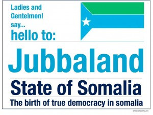

khatumo.net archive
Somalia: The S.F.G.’s Strategy of Political Conflict
By Dr. Michael A. Weinstein
May 31, 2013

Jubbaland State of Somalia
Confrontation over the form of federalism that a future Somali state would adopt is looming, as confidential sources report that the provisional Somali Federal Government (S.F.G.) is in the process of making a concerted push to control the formation of local, regional, and presumptive regional-state administrations in south-central Somalia. The S.F.G., say the sources, is attempting to resist the early formation of a Jubbaland state in the south that would base itself on a decentralized-federal model, as Puntland has done; head off a similar process to the one in the south in the southwestern Bay and Bakool regions by placing an administration allied to it in charge there; counter the Galmudug authority in the east-central area by backing ex-warlord Abdi Qeybdid against the sitting government; and influence the leadership that will succeed the recently-deceased chair of the Ahlu Sunna wal-Jamaa (A.S.W.J.) movement, Sh. Mohamed Yusuf Hefow, that controls most of the central and east-central regions of Galgadud and Hiiraan. On each of those political fronts, the S.F.G. faces opposition, both locally and nationally by the autonomous state of Puntland, which resists the S.F.G.’s bids for control.
The S.F.G.’s Strategy of Political Conflict
By adopting a strategy of political conflict in south-central Somalia’s regions, the S.F.G.’s president, Hassan Sh. Mohamud, is attempting to solve his most pressing political problem, which is to establish the S.F.G.’s authority – dominance and control – over those regions. In the process of trying to do so, Mohamud is forcing the issue of what the state-form of Somalia will be. The options have narrowed down to two, a centralized federalism favored by the S.F.G. and its allies, and a decentralized federalism advocated by Puntland and its allies. The core political conflict in Somalia is between the S.F.G. and Puntland over state-form; the south-central regions are the arenas in which that conflict is being played out. Both the S.F.G. and Puntland are aware of the high stakes involved in their confrontation; if the S.F.G. prevails in the south-central regions, Puntland will be politically isolated and subject to pressure to abandon its autonomy, which gives it generous control over its natural resources and security policy; if Puntland is able to block the S.F.G., the latter will have had to cede significant authority over nascent regional states. The S.F.G.’s pursuit of a strategy of political conflict has turned a constitutional issue into a political power struggle.
Whether or not the S.F.G.’s strategy succeeds – and its success is highly problematic – that strategy is intelligible and follows from the power position of the S.F.G. The new federal government was to all intents and purposes imposed by the Western “donor”-powers/U.N. under veiled and explicit threats to withdraw financial support. The “donor”-powers wanted a “permanent” government established in Somalia so that they could decrease their commitment to the country and at the same time make agreements favorable to them with it. In pursuing those aims, they ended up settling for a provisional/interim entity operating under an incomplete constitution that left the fundamental question of state-form open; absent from the constitution was a determination of centralized or decentralized federalism, and there were not yet regional states set up in south-central Somalia.
As a result of the “donor”-powers’ actions, the S.F.G. was left with the challenge of establishing its authority in the south-central regions without a constitutional basis, scant resources to buy allies in the regions, and military forces that did not extend beyond the capital Mogadishu. Under those constraints, the S.F.G. had few options; it could renounce the attempt to control the south-central regions and allow those regions substantial autonomy, which would weaken whatever (potential) power it might have; or it could do what it has chosen to do, which is to contest the forces for decentralized federalism region by region by allying with factions in each region that felt marginalized by nascent autonomous administrations with power bases independent of the S.F.G. The new federal government opted for the latter, which set up the conditions for political conflict. A source reports that the strategy of political conflict was urged upon Hassan by his inner circle of advisers from his Damul Jadid movement.
The consequences of the conflict strategy carry severe risks to stability. The divide between the forces of centralized and decentralized federalism has become confused with sub-clan rivalries within the regions, exacerbating animosities that already existed. Those rivalries have also given the revolutionary Islamist movement, Harakat al-Shabaab Mujahideen (H.S.M.), which had been pushed out of control over its most lucrative territories, an opportunity to recruit from disaffected sub-clans, and it has drawn Puntland into the fray.
The conflict strategy shows the power deficit of the S.F.G. and its efforts to rectify it. None of what the S.F.G. feels that it has had to do would have been necessary had an effective process of state-building been instituted, which would have involved a process of social-political reconciliation among Somali factions leading to a constitutional agreement to which the major factions would have signed on. That possibility was eliminated by the “donor”-powers’ actions, and that constitutes their most egregious political failure.
As a result of the “donor”-powers’ actions, the domestic Somali actors have been left to pick up the pieces. Absent political reconciliation and the trust that comes with it, the Somali domestic actors are constrained to pursue their perceived interests and attempt to make them prevail. There is no reconciliation process in place; the stage is set for sub-clan-impelled constitutional confrontation abetted by ex-warlords and revolutionary Islamists. Interpreted through the dramaturgical model in political science, a tragedy is unfolding in which the protagonists-antagonists can see nothing to do but play a zero-sum game.
The Status of the Conflict
It is too early in the conflict over the state-form that Somalia will/might take to make a grounded prediction about its outcomes. The S.F.G. has only attempted to implement its strategy of political conflict in earnest since the return of Hassan to Mogadishu in mid-February from his round of visits to the external actors with interests in Somalia. Having touched base and gotten promises of support, Hassan had to try to “deliver” on his end of the bargain, showing that he led a (potentially) effective government.
Hassan’s most important political front, which demands his immediate attention, is the south, where a convention is slated to be held on February 23 to form a Jubbaland state comprising the Lower and Middle Jubba regions and the Gedo region. Approximately 500 delegates, including elders from the three regions are expected to attend, with the S.F.G. and regional states (Ethiopia and Kenya) as observers. Up until the present, it has appeared that the Jubbaland process would issue in a regional state modeled on Puntland. The S.F.G. will try to reverse that outcome.
According to one source, Hassan’s strategy has found willing supporters among sub-clans in the south that feel disadvantaged by the dominance of Ahmed Madobe, the interim governor in Kismayo, and his Ras Kamboni militia, which is allied with Kenyan forces in the south and is mainly composed of members of the Mohamed Suber sub-clan of the Ogaden-Darod. That leaves other Ogaden sub-clans, the Majertein-Darod (with ties to Puntland), and the Marehan-Darod more or less disposed to thwart any attempt by Madobe to dominate the Jubbaland state.
Another source confirms open-source reports that ex-warlord and Marehan leader, Barre Hirale, has met with Hassan and is “on good terms with the S.F.G.” The source says that the Marehan will “listen to Hirale if he is empowered.” Meanwhile, on February 13, Garoweonline reported that a delegation whose members are involved in forming a Jubbaland state met with Puntland’s president, Abdirahman Mohamed Farole, to discuss how “Puntland’s efforts to establish [the] Jubbalnad state could be improved.” On February 15, Garoweonline reported that Hassan and the S.F.G.’s prime minister, Abdi Farah Shirdon, who is Marehan, had split on the Jubbaland issue, with Shirdon supporting the ongoing process and Hassan attempting to undermine it.
The reports from closed and open sources present a picture in which fations in the south have not (yet) fully aligned, crystallized, and polarized around the issue of state-form, and around the S.F.G. and Puntland, with the S.F.G. itself split. The S.F.G.’s presence at the slated convention represents a concession by Hassan by virtue of his acknowledging the Jubbaland process, but it also is an opportunity for him to influence its outcome. Puntland will not be present at the convention, but it will attempt to work through its allies. How the local factions will align, insofar as they do, and how big a role the regional external actors decide to play, and on which of the sides, will determine the outcome, in addition to the efforts of Hassan and Farole.
The second front opened by Hassan in implementing his strategy of political conflict is the southwestern Bay region, dominated by the Rahanweyne clan, where an attempt to form a regional state composed of the Bay and Bakool regions was underway but had not advanced as far as it has in the southern regions. In the south, Hassan has been constrained to try to turn an ongoing process that was going against him to his favor or to subvert it, whereas in the southwest he has attempted to head off such a process before it began to function independently of the S.F.G.
Hassan moved by issuing an S.F.G. decree replacing the longtime Bay political leader and sitting governor, Abdifatah Gesey, who had been backed by Ethiopia and had forces in the region, with Abdi Hasow. Gesey resisted the S.F.G.’s action, declaring that he remained governor. According to a closed source, Ethiopia turned against Gesey and used its forces to oust him. On February 15, Garoweonline reported that Gesey had mobilized his militia and was still in the Bay region’s capital, Baidoa, whereas Hasow was out of public view. According to Garoweonline’s sources, the confrontation between Gesey and Hasow had caused the Bay administration to grind to a halt. Efforts to mediate the dispute were initiated and a delegation was sent to the region by the S.F.G.
On February 21, Garoweonline reported that Gesey was taken by S.F.G. security forces to Mogadishu after mediation efforts had failed. Sources in Mogadishu told Garoweonline that Gesey was “promised another title” in the regional government.
An indication of why Ethiopia switched sides and altered the distribution of power in favor of the S.F.G. is given in an Ethiopian government statement on February 16 concerning talks between the Somali Federal Parliament’s speaker, Mohamed Osman Jawari, and Ethiopia’s foreign minister, Tedros Adhomam, in which Jawari is reported to have urged the formulation of a “common position” between the S.F.G. and Ethiopia on the London conference on Somalia that will be held later in 2013. In return, Ethiopia promised to “work with Somalia on pushing donors to keep their promises.” Jawari then traveled to the ethnic Somali Ogaden region (Somali Regional State) of Ethiopia, where he met with regional officials and visited schools. Reports did not mention any hint that Jawari had taken up alleged human rights violations committed by Ethiopia and Ethiopian-backed militias in the Ogaden.
Just as in the south, the outcome of the face-off in Bay cannot be predicted. The S.F.G. has gained a foothold and has leverage, but it has yet to achieve the traction to push back its adversaries decisively.
A similar stand-off characterizes the situation in the Galmudug authority in east-central Somalia, where two governments dominated respectively by different sub-clans of the Hawiye claim claim the right to rule. According to a source, the S.F.G. has recognized one of the contenders – the faction led by ex-warlord Abdi Qeybdid – as the “legitimate” authority. During the past month there have been outbreaks of politically-inspired sub-clan violence in Galmudug with open sources claiming that Qeybdid’s militia is responsible for initiating the clashes. Again, as in the south and southwest, the S.F.G.’s strategy of political conflict is being implemented in Galmudug, and its outcome is uncertain.
In the central region of Galgadud and part of the Hiiraan region, the dominant A.S.W.J. movement is in the process of naming a leader to replace Sh. Mohamed Yusuf Hefow, who died in mid-February. Hefow had been in discussions with the S.F.G. to merge A.S.W.J. with it. A.S.W.J., which has several factions that support or oppose collaboration with the S.F.G. in various degrees, has now become subject, according to a source, to pressure from the S.F.G. to integrate with it on the S.F.G.’s terms. Again, the outcome is uncertain, but the S.F.G.’s push is underway. The source reports that a delegation from the federal parliament is in Galgadud, claiming that they are “consulting with local communities on extending government rule” to the region. The source says that the presence of the delegation has led to a dispute between some of the A.S.W.J.’s leadership and the S.F.G.
Assessment
One of the sources contributing to this analysis has put the S.F.G.’s/Hassan’s strategy of political conflict succinctly and precisely: Hassan is attempting to isolate some leaders and factions in each region and to empower others favorable to him. In doing so, Hassan is splitting each region politically, intervening in local conflicts and exacerbating them, and working with whoever will ally with him for whatever reason, whether it be ex-warlords, dissident clans, or factions within a movement. That is the familiar strategy of divide-and-rule, which is used by actors who cannot (Hassan) or do not want to expend the military and/or financial resources required to control the outcome of a conflict.
Hassan is playing the divide-and-rule game to extend the authority of the S.F.G. into the south-central regions, but in doing so he is carrying with him the program of centralized federalism. Puntland has yet to play its hand overtly, but it can be expected to do so if it appears that the centralized-federalist project is gaining traction and momentum. Since Hassan’s strategy necessitates opposition to its implementation by the forces that he is attempting to isolate, as it has done in each case, the path is open not only to confrontation at the local level and the re-activation of H.S.M., but to counter-moves by Puntland.
It is too early to predict whether or not Hassan will be successful, but it can be said that a political battle is looming that will overshadow all other political issues in the territories of post-independence Somalia.
Hassan’s strategy is obviously high risk and high stakes. In his best-case scenario, Hassan prevails in each south-central region and Puntland is faced with the option of compromising its autonomy or separating from south-central Somalia. Short of the best case for Hassan, “Somalia” becomes irretrievably fragmented and balkanized, or its territories become a mixture of uncoordinated regional and local forms of administration.
It is unclear whether or not the “donor”-powers understand what is happening in Somali domestic politics and, if they do, whether they are prepared to intervene and in what way. That the “donor”-powers will act decisively to try to prevent political breakdown is unlikely. The United States, for example, was prepared to support the S.F.G.’s request to have the United Nations arms embargo on it lifted, but then backtracked after European opposition and stated that it would wait for the completion of a U.N. “review” of the desirability of taking such action. The U.S. backtrack was a blow to the S.F.G., which had expected more robust support when the U.S. recognized it.
As it stands, no actor, external or domestic, is working to avoid the impending confrontation. There is no formal process of reconciliation underway. The discourse of Somali political actors and intellectuals is not addressing the issue directly or, in some cases, at all. The external actors are silent about it. At the point at which the conflict intensifies to the degree that it is impossible for actors to ignore it, it is likely that it will be too late to resolve; this analysis is simply an early warning.
Report Drafted By: Dr. Michael A. Weinstein, Professor of Political Science, Purdue University in Chicago weinstem@purdue.edu